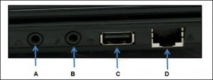
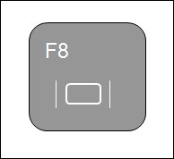
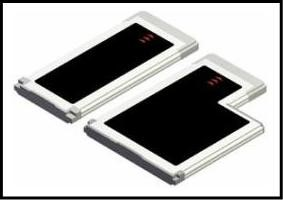
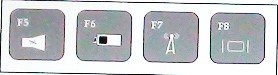
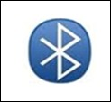

Chapter 06 – IT Essentials
01. Which three components commonly connect to USB or FireWire ports? (Choose three.)
- Camera;
- AC adapter;
- PC Card;
- Printer;
- Scanner;
- Graphics adapter.
02. A technician is replacing a laptop SODIMM. With what component is the technician working?
- AC adapter;
- Battery;
- ExpressBus expansion card;
- Hard drive;
- Optical drive;
- RAM.
03. Which component should be removed before cleaning a laptop?
- memory module;
- battery;
- hard drive;
- power supply.
04.  Refer to the exhibit. A laptop touchpad is nonresponsive. What port can be used to attach an external pointing device as a quick fix until the touchpad issue can be resolved?
- Port A;
- Port B;
- Port C;
- Port D.
05. A technician is responding to a helpdesk ticket for a laptop that has a distorted image of the Windows desktop. What is one possible solution?
- Restart the laptop.
- Re-install the Windows operating system.
- Reset the display to its native resolution.
- Obtain an updated display driver from Microsoft.
- Set the resolution to VGA mode.
06. What is the major difference between desktop and laptop motherboards?
- Desktops use the AT form factor while laptops use the mini or baby AT form factor.
- Desktop motherboards typically have a standard form factor and are interchangeable while laptop motherboards are proprietary.
- Desktops have a variety of expansion and RAM slot designs while laptops have standard expansion and RAM slot designs.
- Currently there is no significant difference in the motherboard form factors for the desktop and laptop.
07. Which two devices can be individually configured within Windows XP to power off after the laptop has been idle for a given period of time? (Choose two.)
- optical drive;
- disk drive;
- fan;
- monitor;
- wireless NIC.
08. Which two questions that a technician can ask during the troubleshooting process are considered open-ended? (Choose two.)
- Does the monitor come on?
- Can you access the Internet?
- Is the laptop battery charging?
- What software has been installed?
- How would you describe the problem you are experiencing?
09. Which two laptop ports are used primarily for communication and network connectivity? (Choose two.)
- Ethernet;
- Modem;
- Parallel;
- DVI.
10. Which two characteristics make laptops a better choice than desktop computers? (Choose two.)
- Mobility;
- Functionality;
- Size;
- OS installed;
- Compatibility.
11.  Refer to the exhibit. A laptop user realizes that the key that is shown in the exhibit is used when connecting a laptop to an external projector. What additional key on the laptop keyboard is normally required to make the image on the laptop screen display on the projector?
- Ctrl;
- Alt;
- Shift;
- Tab;
- Fn.
12. Which generation of cell-phone standards was the first to deal with how to send and receive text, photographs, and video?
- first;
- second;
- third;
- fourth.
13. Which type of interface do current laptops use to achieve similar expansion capabilities as desktops?
- CardBus;
- PC ExpressCard;
- ISA;
- PCI.
14.  Refer to the exhibit. What does this symbol indicate when illuminated on a laptop?
Refer to the exhibit. What does this symbol indicate when illuminated on a laptop?
- The laptop is connected to an external monitor or projector.
- The laptop battery is fully charged.
- The laptop can communicate with a Bluetooth wireless device.
- The laptop is in energy efficiency mode.
- The laptop integrated camera is active.
15. Where can a technician change the power schemes on a laptop running Windows XP?
- Select Advanced Settings from within the BIOS.
- Select Power Options from within the Control Panel.
- Select Power from within Administrative Tools.
- Select Configure Power Settings from within Computer Management.
16. What is the proper way to clean optical drives?
- Spray ionized solution inside the drive.
- Use an electrostatic vacuum cleaner.
- Blow the dust with compressed air from the inside.
- Use a cleaning disc for optical drives.
17. Which two actions should be performed to clean the surface of CDs and DVDs? (Choose two.)
- Use a lint-free cotton cloth.
- Use a cotton ball.
- Use a household cleaning solution.
- Wipe the disc from the center outward.
- Wipe the disc in a clockwise direction.
- Wipe the disc in a counterclockwise direction.
18. Which display technology is most commonly found in modern laptop computers?
- CRT;
- LED;
- Plasma;
- LCD.
19. A technician has been called in to troubleshoot a laptop that fails to power on. The technician repeatedly pushes the power button without any results. What should the technician do next?
- Attach the AC adapter.
- Replace the battery with a spare.
- Press a key on the keyboard or use the pointing device.
- Remove any unused devices including externally connected ones.
20.  Refer to the exhibit. Which two form factors are supported by the devices shown in the graphic? (Choose two.)
- 30mm wide;
- 34mm wide;
- 43mm wide;
- 45mm wide;
- 54mm wide.
21.  Refer to exhibit. A laptop has these graphics on specific keys on the keyboard. Wich key would be used in conjunction with the FN key to connect a laptop to an external monitor?
- F5;
- F6;
- F7;
- F8.
22. Refer to the exhibit. Which laptop component port is circled?
- USB;
- VGA;
- Parallel;
- S-video;
- Docking connector.
23. A technician is responding to a helpdesk ticket for a laptop that has a distorted image of the Windows desktop. What is one possible solution?
- Adjust the power scheme;
- Calibrate the LCD backlight;
- Reset the laptop to the native resolution;
- Obtain an updated display driver from the laptop manufacturer.
24. Refer to the exhibit. Which type of connection is indicated when laptop LED is illumined with the symbol that is shown?

{kind=link}
{kind=link}
{kind=link}
{kind=link}
{kind=link}